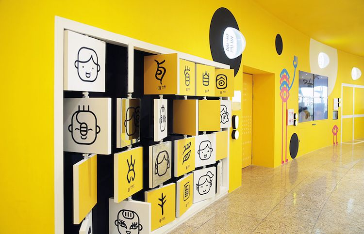
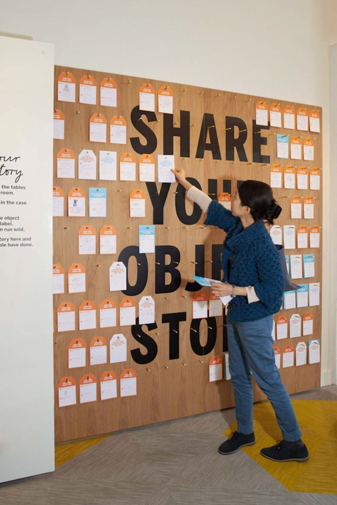

What are the elements of an exhibit that prompt visitor interaction?
An observation of Animation, an exhibit that was developed by the Oregon Museum of Science and Industry and has recently opened at the New York Hall of Science (NYSCI) suggests some general principles that will be helpful to all museums as they build interactive exhibits. The purpose of this exhibit is “to explore animation from concept to finish product -from storyboarding, character design, and drawing techniques, to movement, timing, filming and sound.”
Allow for Social Interaction Among Visitors
Involve Physical Activity
Give the Audience Flexible Goals